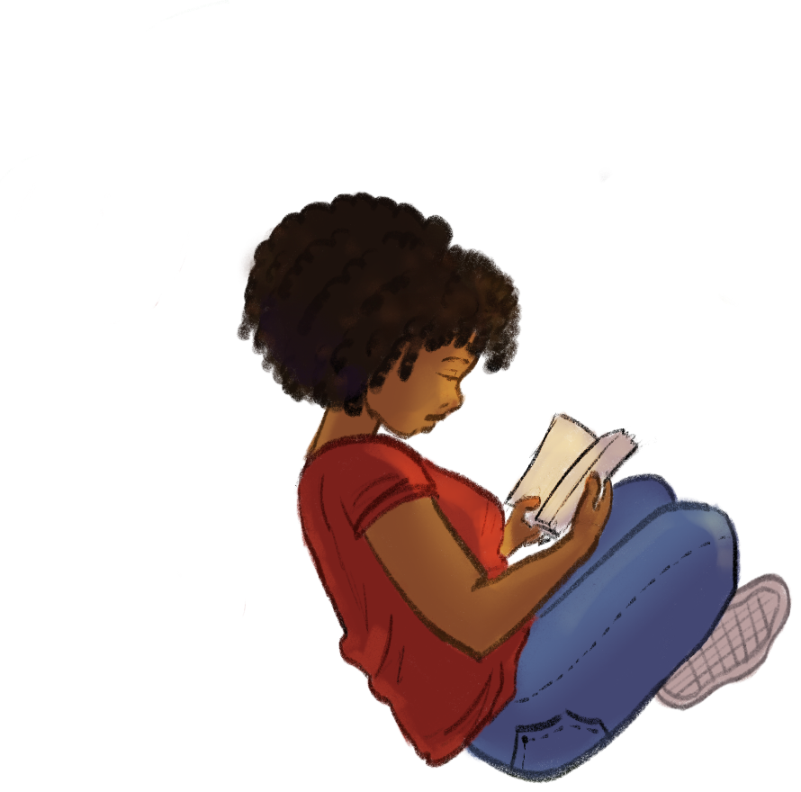

Uju
Duru
UX & Design Engineer
Nigeria to America at twelve; cognitive science and code since.

UX & Design Engineer
Nigeria to America at twelve; cognitive science and code since.

Four projects, each with the decision that mattered.
Placeholder — the situation in two or three sentences: what existed, who it failed, and why it was worth changing.
Placeholder — the decision that mattered, and what it cost.
Placeholder — the situation in two or three sentences: what existed, who it failed, and why it was worth changing.
Placeholder — the decision that mattered, and what it cost.
Placeholder — the situation in two or three sentences: what existed, who it failed, and why it was worth changing.
Placeholder — the decision that mattered, and what it cost.
Placeholder — the situation in two or three sentences: what existed, who it failed, and why it was worth changing.
Placeholder — the decision that mattered, and what it cost.
Where the engineering rigour comes from.
2024 — now
Design systems and front-end for a property-management platform.
2022 — 2024
Flows, prototypes, and the first component library.
before that
Perception and memory — how people actually read an interface.
Eighteen pieces, and counting.
The shortest way to reach me.
Placeholder — this sheet is still being designed.
Lift the bottom edge, or use the nav. ↓ ↑ also work.